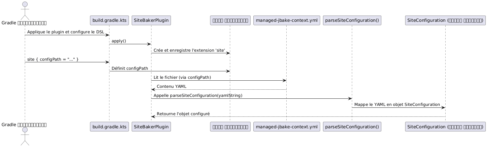

অনুচ্ছেদ ৩: Jackson-এর YAML পার্সিংয়ের জন্য TDD সহ একটি Gradle প্লাগইনে সংহতকরণ
Publié le 25 September 2025
লক্ষ্য গোষ্ঠী : মধ্যম স্তরের Gradle ডেভেলপারদের জন্য যারা জটিল কনফিগারেশন পরিচালনা করতে ইচ্ছুক।
ভূমিকা
গ্রেডল প্লাগইনের ডেভেলপমেন্টে, জটিল কনফিগারেশন ম্যানেজমেন্ট একটি সাধারণ কাজ। DSL-কে সোতক গুণধর্ম দিয়ে অতিক্রম করার বদলে, কনফিগারেশনকে বাহ্যিক ফাইলে—যেমন YAML—এ সংজ্ঞায়িত করা প্রায়শই পরিষ্কার এবং রক্ষণবেক্ষনযোগ্য। এই আর্টিকেলটি আপনাকে Jackson লাইব্রেরির মাধ্যমে YAML ফাইলকে Kotlin অবজেক্টে পার্স করার একীकरण পথে গাইড করে, একটি কঠোর TDD পদ্ধতির মাধ্যমে আমাদের প্লাগইনের দৃঢ়তা নিশ্চিত করা হয়েছে।site-baker.
প্রексиাপট: আমাদের প্লাগইন `site-baker
আমাদের প্লাগইন`site-baker`est conçu pour automatiser la génération et le déploiement d’un site statique. Il a besoin de lire un fichier de configuration YAML (
Bengali translation with preserved spacing and no backticks:
এটি একটি স্ট্যাটিক সাইটের তৈরি ও বিনিয়োগকে স্বয়ংক্রিয় করতে ডিজাইন করা হয়েছে। এটি একটি YAML কনফিগারেশন ফাইল পড়তে দরকার دارد (
</think>
est conçu pour automatiser la génération et le déploiement d’un site statique. Il a besoin de lire un fichier de configuration YAML (
Bengali translation with preserved spacing and no backticks:
এটি একটি স্ট্যাটিক সাইটের তৈরি ও বিনিয়োগকে স্বয়ংক্রিয় করতে ডিজাইন করা হয়েছে। এটি একটি YAML কনফিগারেশন ফাইল পড়তে দরকার دارد (
Output only the translated text: est conçu pour automatiser la génération et le déploiement d’un site statique. Il a besoin de lire un fichier de configuration YAML ( এটি একটি স্ট্যাটিক সাইটের তৈরি ও বিনিয়োগকে স্বয়ংক্রিয় করতে ডিজাইন করা হয়েছে। এটি একটি YAML কনফিগারেশন ফাইল পড়তে দরকার دارد (managed-jbake-context.yml) উৎস পথ, স্থাপন গন্তব্য, এবং গিট শংসাপত্রের মতো তথ্য পেতে।
আমরা পার্স করতে চান এমন YAML কনফিগারেশন এইরূপ :
bake:
srcPath: "./site/jbake"
destDirPath: "bake"
cname: "cheroliv.com"
pushPage:
from: "bake"
to: "cvs"
repo:
name: "trainings"
repository: "https://github.com/pages-content/pages-content.github.io.git"
credentials:
username: "USERNAME"
password: "SECRET_TOKEN"
branch: "main"
message: "cheroliv.com"
# ... autres configurations (pushMaquette, supabase, etc.)2. কোটলিনে কনফিগারেশন মডেলিং
পার্স করার আগে, আমাদের কটলিনে আমাদের ডেটার গঠন নির্ধারণ করতে হবে। Jackson এই ক্লাসগুলো ব্যবহার করে YAML কনটেন্টকে স্বয়ংক্রিয়ভাবে ম্যাপ করবে।
// plugin/src/main/kotlin/com/cheroliv/site/baker/data/SiteConfiguration.kt
package com.cheroliv.site.baker.data
import com.fasterxml.jackson.databind.ObjectMapper
import com.fasterxml.jackson.dataformat.yaml.YAMLFactory
import com.fasterxml.jackson.module.kotlin.readValue
import com.fasterxml.jackson.module.kotlin.registerKotlinModule
fun parseSiteConfiguration(yaml: String): SiteConfiguration {
val mapper = ObjectMapper(YAMLFactory()).registerKotlinModule()
return mapper.readValue(yaml)
}
data class GitPushConfiguration(
val from: String = "",
val to: String = "",
val repo: RepositoryConfiguration = RepositoryConfiguration(),
val branch: String = "",
val message: String = "",
)
data class RepositoryConfiguration(
val name: String = "",
val repository: String = "",
val credentials: RepositoryCredentials = RepositoryCredentials(),
) {
companion object {
const val ORIGIN = "origin"
const val CNAME = "CNAME"
const val REMOTE = "remote"
}
}
data class RepositoryCredentials(val username: String = "", val password: String = "")
data class SiteConfiguration(
val bake: BakeConfiguration = BakeConfiguration(),
val pushPage: GitPushConfiguration = GitPushConfiguration(),
val pushMaquette: GitPushConfiguration = GitPushConfiguration(),
val pushSource: GitPushConfiguration? = null,
val pushTemplate: GitPushConfiguration? = null,
val supabase: SupabaseContactFormConfig? = null
)
data class BakeConfiguration(
val srcPath: String = "",
val destDirPath: String = "",
val cname: String? = null,
)
// ... (autres data classes pour Supabase, si nécessaire)ফাংশন`parseSiteConfiguration`আমাদের ডেসিরিয়ালাইজেশনের প্রবেশ পয়েন্ট। এটি ব্যবহার করে`ObjectMapper`জ্যাকসনের, কনফিগার করা হয়েছে`YAMLFactory`YAML ফরম্যাটের জন্য এবং`registerKotlinModule()`Kotlin এর বিশেষতাগুলোর সমর্থনের জন্য (যেমন প্রপার্টির ডিফল্ট মান).
3. build.gradle.kts-এ Jackson-এর ইন্টিগ্রেশন
Jackson ব্যবহার করতে, আমাদের প্রয়োজনীয় নির্ভরতা যোগ করতে হবে`build.gradle.kts`আমাদের মডিউলের`plugin`:
// plugin/build.gradle.kts
dependencies {
// Jackson for YAML parsing
implementation("com.fasterxml.jackson.module:jackson-module-kotlin:2.18.3")
implementation("com.fasterxml.jackson.dataformat:jackson-dataformat-yaml:2.18.3")
// ... autres dépendances
}আমরা ব্যবহার করি`jackson-module-kotlin`কোটলিন সমর্থন এবং`jackson-dataformat-yaml`YAML ফরম্যাটের مدیریتের জন্য।
4. TDD পদ্ধতি: YAML পার্সিং টেস্টিং
এখন, আমরা টিডিডি প্রয়োগ করে আমাদের পার্সিং লজিকের বৈধতা যাচাই করি।
4.1. ইউনিট টেস্ট : YAML কে Kotlin অবজেক্টে ম্যাপ করা
আমরা একটি ইউনিট টেস্ট দিয়ে শুরু করি`SiteBakerPluginTest.kt`ফাংশনটি যাচাই করতে`parseSiteConfiguration`এটি সঠিকভাবে YAML স্ট্রিংকে একটি অবজেক্টে রূপান্তর করতে পারে।SiteConfiguration.
// plugin/src/test/kotlin/com/cheroliv/site/baker/SiteBakerPluginTest.kt
@Test
fun `can map configuration text to SiteConfiguration object`() {
val yamlString = "../../managed-jbake-context.yml"
.run(::File)
.readText()
.trimIndent()
val config: SiteConfiguration = parseSiteConfiguration(yamlString)
assertEquals("cheroliv.com", config.bake.cname)
assertEquals("main", config.pushPage.branch)
assertEquals("https://github.com/pages-content/pages-content.github.io.git", config.pushPage.repo.repository)
}এই টেস্টটি ফাইলের বিষয়বস্তু পড়ে`managed-jbake-context.yml`(যাকে পরীক্ষাটি বৈধ হওয়ার জন্য অস্তিত্ব থাকতে হবে) এবং অবজেক্টে অ্যাসার্টিভ্য করে`SiteConfiguration`ফলাফল। এটি যাচাই করে যে YAML-এর কী মানগুলো সঠিকভাবে মানচিত্রিত করা হয়েছে।
4.2. ফাংশনাল টেস্ট: কনফিগারেশন ফাইল পড়া যাচাই করুন
প্লাগিন তার DSL-এর মাধ্যমে কনফিগারেশন ফাইল পড়তে সক্ষম এবং একটি বাস্তব Gradle পরিবেশে পার্সিং কাজ করছে তা নিশ্চিত করতে, আমরা একটি ফাংশনাল টেস্ট যোগ করি`SiteBakerPluginFunctionalTest.kt`.
এই টেস্টটি গুরুত্বপূর্ণ কারণ এটি একটি প্রকৃত প্রকল্পে প্লাগইন চালানোর অনুকরণ করে। এটি হওয়া উচিতবাতাসবন্ধনীয়, অর্থাৎ, তার নিজেই ফাইলটি তৈরি করতে হবে`managed-jbake-context.yml`নিয়ন্ত্রিত সামগ্রী দিয়ে, পরীক্ষার পুনরাবৃত্তি ও পৃথকতাকে নিশ্চিত করতে।
// plugin/src/functionalTest/kotlin/com/cheroliv/site/baker/SiteBakerPluginFunctionalTest.kt
@Test
fun `config file contains good data`(){
val configContent = configFile.readText(UTF_8)
// Vérifications comme dans vos commentaires
assertTrue(configContent.contains("bake"))
assertTrue(configContent.contains("pushPage"))
assertTrue(configContent.contains("repository"))
}এই ফাংশনাল টেস্টটি যাচাই করে যে পরীক্ষার অস্থায়ী ডিরেক্টরিতে কপি করা কনফিগারেশন ফাইলটি আশাপ্রাপ্ত ডেটা ধারণ করে। যদিও এই টেস্টটি YAML-কে Kotlin অবজেক্টে সরাসরি পার্স না করে, এটি ফাইল এবং এর বিষয়বস্তু উপস্থিতির যাচাই করে, যা প্লাগইন tarafından পার্সের জন্য একটি অপরিহার্য পূর্বশর্ত।
5. পার্সিং ফ্লো ভিজ্যুয়ালাইজেশন
নিম্নলিখিত আলোচিত্র ডেটা প্রবাহ এবং ইন্টার্যাকশন YAML কনফিগারেশনের পার্সিংের সময় দেখায়:

উপসংহার
একটি টিডিডি (TDD) পদ্ধতি অনুসরণ করে, আমরা সফলভাবে Jackson লাইব্রেরিকে Gradle প্লাগইনের মধ্যে YAML কনফিগারেশন ফাইলগুলোকে Kotlin অবজেক্টে পার্স করার জন্য একীভূত করেছি। এই পদ্ধতির ফলে আমরা সক্ষম হলাম :
-
স্পষ্টভাবে মডেল তৈরি করাআমাদের কনফিগারেশন Kotlin ডেটা ক্লাসের সাথে।
-
পার্সিং লজিক যাচাই করুনটার্গেটেড ইউনিট পরীক্ষা।
-
একীকরণ নিশ্চিত করুনএকটি বাস্তব Gradle পরিবেশে, হেরমেটিক ফাংশনাল টেস্টের মাধ্যমে।
এই দৃঢ় ভিত্তি আমাদেরকে আমাদের প্লাগইনকে এই কনফিগারেশনের উপর ভিত্তি করে ফাংশনালিটি যোগ করে বিস্তার করার জন্য বড়ো বিশ্বাস প্রদান করে, এবং কোডের মেইনটেনেবিলিটি এবং দৃঢ়তা নিশ্চিত করে। YAML পার্সিং এখন আমাদের প্লাগইন-এর একটি বিশ্বস্ত ও পরীক্ষিত ফাংশনালিটি।site-baker.